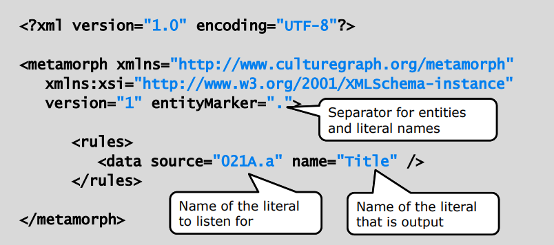
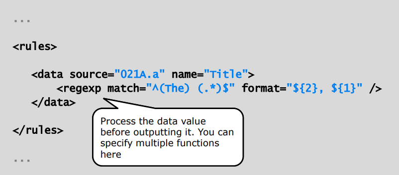

Introduction to Metafacture
Fabian Steeg, Open Infrastructure, hbz NRW
Vorstellung im Workshop Tools für das Metadatenmanagement, SUB Göttingen, 2020-03-12
This presentation:
http://slides.lobid.org/metafacture-2020

Agenda
- Introduction
- Metafacture concepts
- Metafacture usage
- Exercises: workflows, transforming,
analysing, and combining data - Outlook
Introduction
What is Metafacture
[...] for processing semi-structured data, focus on library metadata
A versatile tool: usable as command line tool, Java/JVM library; batch processing, on-the-fly
An open framework: share and reuse solutions in the library world (both individual modules and complete workflows)
Who develops / uses Metafacture
Originally developed an maintained by Markus Geipel and Christoph Böhme at the German National Library (DNB)
On GitHub since 2013, currently 18 contributors, 53 stars; since 2019 maintained by Open Infrastructure, hbz NRW
Used e.g. by DNB LDS, Culturegraph, D:SWARM, swissbib, lobid
Where we use Metafacture
Transformation of catalog data for indexing as JSON-LD
hbz linked data service: web APIs and search UIs for title and authority data (lobid.org)
Based on lobid: regional bibliography for NRW (nwbib.de)
Setup
metafacture-2020/README.mdMetafacture
Basic idea: data streams through multiple modules (read, decode, transform, encode, write)
Each module reads data of a specific type and writes data of a specific type
Various formats supported (PICA, MAB, MARC, METS, etc.), extensible framework
Sample workflow

Source: Christoph Böhme, http://swib.org/swib13/slides/boehme_swib13_131.pdf
Workflows
Individual stream modules build the overall workflow
Workflow can be expressed with Flux (a simple DSL) or with Java (with typesafe input and output based on Java Generics)
Flux workflows can be edited in any text editor and executed on the command line, Java workflows are like any Java program
Workshop data
Download and unpack the 'workshop' branch of the 'metafacture-flux-examples' GitHub repo
https://github.com/hbz/metafacture-flux-examples/archive/workshop.zip
(or: git clone -b workshop https://github.com/hbz/metafacture-flux-examples.git)
Solutions
Download and unpack the 'master' branch of the 'metafacture-flux-examples' GitHub repo
https://github.com/hbz/metafacture-flux-examples/archive/master.zip
(or: git clone https://github.com/hbz/metafacture-flux-examples.git)
Set up Metafacture CLI app
https://github.com/metafacture/metafacture-core#metafacture-as-a-stand-alone-application
The code below assumes you moved the resulting folder to your home directory and renamed it to 'metafacture'
$ cd ~/metafacture
$ ./flux.sh # or flux.bat on Windows
Exercises
Exercise 1: Printing data
Output the content of bib-data.pica.gz as Formeta
$ cd metafacture-flux-examples/sample1
$ gedit sample1.flux &
"bib-data.pica.gz"
|open-file|as-lines|decode-pica|encode-formeta|write("stdout");
$ ~/metafacture/flux.sh sample1.flux
https://github.com/hbz/metafacture-flux-examples/tree/master/sample1
Exercise 1: Printing data – module options
Output the content of bib-data.pica.gz as Formeta
$ cd metafacture-flux-examples/sample1
$ gedit sample1.flux &
"bib-data.pica.gz"
|open-file
|as-lines
|decode-pica
|encode-formeta(style="multiline")
|write("stdout");
$ ~/metafacture/flux.sh sample1.flux
https://github.com/hbz/metafacture-flux-examples/tree/master/sample1
Exercise 1: Printing data – output
'482147350' {
'001@' {
'a': '5',
'0': '1-2'
},
'001A' {
'0': '1100:15-10-94'
},
'001B' {
'0': '9999:12-06-06',
't': '16:10:17.000'
},
'001D' {
'0': '9999:99-99-99'
},
'001U' {
'0': 'utf8'
},
'001X' {
'0': '0'
},
'002@' {
'0': 'Aag'
},
'003@' {
'0': '482147350'
},
'006U' {
'0': '94,P05'
},
'007E' {
'0': 'U 70.16407'
},
'007I' {
'S': 'o',
'0': '74057548'
},
'011@' {
'a': '1970'
},
'017A' {
'a': 'rh'
},
'021A' {
'a': 'Die @Berufsfreiheit der Arbeitnehmer und ihre Ausgestaltung in völkerrechtlichen Verträgen',
'd': 'Eine Grundrechtsbetrachtg'
},
'028A' {
'9': '106884905',
'7': 'Tn3',
'A': 'gnd',
'0': '106884905',
'a': 'Projahn',
'd': 'Horst D.'
},
'033A' {
'p': 'Würzburg'
},
'034D' {
'a': 'XXXVIII, 165 S.'
},
'034I' {
'a': '8'
},
'037C' {
'a': 'Würzburg, Jur. F., Diss. v. 7. Aug. 1970'
}
}
'958090564' {
'001@' {
'0': '1',
'a': '5'
},
'001A' {
'0': '1140:08-12-99'
},
'001B' {
'0': '9999:05-01-08',
't': '22:57:29.000'
},
'001D' {
'0': '9999:99-99-99'
},
'001U' {
'0': 'utf8'
},
'001X' {
'0': '0'
},
'002@' {
'0': 'Aa'
},
'003@' {
'0': '958090564'
},
'004A' {
'f': 'kart. : DM 9.70, EUR 4.94, sfr 8.00, S 68.00'
},
'006U' {
'0': '00,B05,0285'
},
'007I' {
'S': 'o',
'0': '76088278'
},
'011@' {
'a': '1999'
},
'017A' {
'a': 'rb',
'a': 'si'
},
'019@' {
'a': 'XA-AT'
},
'021A' {
'a': 'Zukunft Bildung',
'h': 'Politische Akademie. [Hrsg. von Günther R. Burkert-Dottolo und Bernhard Moser]'
},
'028C' {
'9': '130681849',
'7': 'Tp1',
'V': 'piz',
'A': 'gnd',
'0': '130681849',
'E': '1952',
'a': 'Burkert',
'd': 'Günther R.',
'B': 'Hrsg.'
},
'033A' {
'p': 'Wien',
'n': 'Polit. Akad.'
},
'034D' {
'a': '79 S.'
},
'034I' {
'a': '24 cm'
},
'036F' {
'x': '299 12',
'9': '551720077',
'g': 'Adn',
'7': 'Tb1',
'A': 'gnd',
'0': '1040469-7',
'a': 'Politische Akademie',
'g': 'Wien',
'Y': 'PA-Information',
'h': 'Politische Akademie, WB',
'p': 'Wien',
'J': 'Politische Akad., WB',
'l': '99,2'
},
'036F/01' {
'x': '12',
'9': '025841467',
'g': 'Advz',
'i': '2142105-5',
'Y': 'Aktuelle Fragen der Politik',
'h': 'Politische Akademie',
'p': 'Wien',
'J': 'Politische Akad. der ÖVP',
'l': 'Bd. 2'
},
'045E' {
'a': '22',
'd': '18',
'm': '370'
},
'047A' {
'S': 'FE',
'a': 'ta'
}
}
https://github.com/hbz/metafacture-flux-examples/tree/master/sample1
Exercise 2: Logging
log-stream and log-object to analyze mystery-script.flux
(Set priority value="debug" in ~/metafacture/config/log4j.xml)
$ cd ../sample2
$ gedit mystery-script.flux &
"input.foma.gz"
|open-file
|as-lines
|filter-strings("geburts", passMatches="false")
|decode-formeta
|morph("mystery-morph-1.xml")
|morph("mystery-morph-2.xml")
|encode-literals
|write("stdout");
$ ~/metafacture/flux.sh mystery-script.flux
https://github.com/hbz/metafacture-flux-examples/tree/workshop/sample2
Exercise 2: Logging – solution
log-stream and log-object to analyze mystery-script.flux
(Set priority value="debug" in ~/metafacture/config/log4j.xml)
"input.foma.gz"
|open-file
|as-lines
|log-object("Filtering: ")
|filter-strings("geburts", passMatches="false")
|log-object("Decoding: ")
|decode-formeta
|log-stream("Morphing 1: ")
|morph("mystery-morph-1.xml")
|log-stream("Morphing 2: ")
|morph("mystery-morph-2.xml")
|log-stream("Encoding: ")
|encode-literals
|log-object("Writing: ")
|write("stdout");
https://github.com/hbz/metafacture-flux-examples/tree/master/sample2
Exercise 2: Logging – output
Filtering: 1 { name: Franz Kafka, birthplace: Prague, birthdate: 1883-07-03 }
Decoding: 1 { name: Franz Kafka, birthplace: Prague, birthdate: 1883-07-03 }
Morphing 1: start record 1
Morphing 2: start record 1
Encoding: start record 1
Morphing 1: literal name=Franz Kafka
Morphing 2: literal Firstname=Franz
Morphing 2: literal Lastname=Kafka
Morphing 1: literal birthplace=Prague
Morphing 2: literal Birthplace=Prague
Morphing 1: literal birthdate=1883-07-03
Morphing 2: literal Birthdate=03. July 1883
Morphing 1: end record
Morphing 2: end record
Encoding: literal =1, Kafka, Franz, 03. July 1883, Prague
Writing: 1, Kafka, Franz, 03. July 1883, Prague
Encoding: end record
Filtering: 2 { name: Václav Havel, birthplace: Prague, birthdate: 1939-10-05 }
Decoding: 2 { name: Václav Havel, birthplace: Prague, birthdate: 1939-10-05 }
Morphing 1: start record 2
Morphing 2: start record 2
Encoding: start record 2
Morphing 1: literal name=Václav Havel
Morphing 2: literal Firstname=Václav
Morphing 2: literal Lastname=Havel
Morphing 1: literal birthplace=Prague
Morphing 2: literal Birthplace=Prague
Morphing 1: literal birthdate=1939-10-05
Morphing 2: literal Birthdate=05. October 1939
Morphing 1: end record
Morphing 2: end record
Encoding: literal =2, Havel, Václav, 05. October 1939, Prague
Writing: 2, Havel, Václav, 05. October 1939, Prague
Encoding: end record
Filtering: 3 { name: Leoš Janáček, birthplace: Hukvaldy, birthdate: 1854-07-03 }
Decoding: 3 { name: Leoš Janáček, birthplace: Hukvaldy, birthdate: 1854-07-03 }
Morphing 1: start record 3
Morphing 2: start record 3
Encoding: start record 3
Morphing 1: literal name=Leoš Janáček
Morphing 2: literal Firstname=Leoš
Morphing 2: literal Lastname=Janáček
Morphing 1: literal birthplace=Hukvaldy
Morphing 2: literal Birthplace=Hukvaldy
Morphing 1: literal birthdate=1854-07-03
Morphing 2: literal Birthdate=03. July 1854
Morphing 1: end record
Morphing 2: end record
Encoding: literal =3, Janáček, Leoš, 03. July 1854, Hukvaldy
Writing: 3, Janáček, Leoš, 03. July 1854, Hukvaldy
Encoding: end record
Filtering: 4 { name: Franz Viktor Werfel, geburtsort: Prague, geburtsdatum: 1890-09-10 }
Filtering: 5 { name: Max Brod, birthplace: Prague, birthdate: 1884-05-27 }
Decoding: 5 { name: Max Brod, birthplace: Prague, birthdate: 1884-05-27 }
Morphing 1: start record 5
Morphing 2: start record 5
Encoding: start record 5
Morphing 1: literal name=Max Brod
Morphing 2: literal Firstname=Max
Morphing 2: literal Lastname=Brod
Morphing 1: literal birthplace=Prague
Morphing 2: literal Birthplace=Prague
Morphing 1: literal birthdate=1884-05-27
Morphing 2: literal Birthdate=27. May 1884
Morphing 1: end record
Morphing 2: end record
Encoding: literal =5, Brod, Max, 27. May 1884, Prague
Writing: 5, Brod, Max, 27. May 1884, Prague
Encoding: end record
Filtering: closeStream
Decoding: closeStream
Morphing 1: closeStream
Morphing 2: closeStream
Encoding: closeStream
Writing: closeStream
https://github.com/hbz/metafacture-flux-examples/tree/master/sample2
Flux workflows
Where to use log-stream and log-object?
What does encode-literals actually do?
...
Metafacture documentation
$ ./flux.sh # or flux.bat on Windows
https://github.com/metafacture/metafacture-documentation/blob/master/flux-commands.md
Transform data
Metamorph
Stream module for metadata transformation/mapping
metadata events / key-value → metadata events / key-value
Rules externalized in morph file, XML
Metamorph

Source: Christoph Böhme, http://swib.org/swib13/slides/boehme_swib13_131.pdf
Morph: data
Source: Christoph Böhme, http://swib.org/swib13/slides/boehme_swib13_131.pdf
Morph: modify
Source: Christoph Böhme, http://swib.org/swib13/slides/boehme_swib13_131.pdf
Morph: combine

Source: Christoph Böhme, http://swib.org/swib13/slides/boehme_swib13_131.pdf
Exercise 3: Transforming data
Edit 'simple-transformation.xml' to get the title, publisher, location and year information from input fields:
021A.a, 033A.n, 033A.p, 011@.n
Combine publisher and location into one field.
Use human-readable output fields.
Exercise 3: Transforming data
"bib-data.pica.gz"
|open-file
|as-lines
|decode-pica
|morph("simple-transformation.xml")
|encode-formeta(style="multiline")
|write("stdout");
$ cd ../sample3 ; gedit simple-transformation.xml &
<rules>
<data source="021A.a" name="Title"></data>
<data source="011@.n" name="Year">
<regexp match="\[(\d+)\]" format="${1}"/>
</data>
<combine name="Publisher" value="${Publisher}: ${Place}">
<data source="033A.n" name="Publisher"></data>
<data source="033A.p" name="Place"></data>
</combine>
</rules>
$ ~/metafacture/flux.sh simple-transformation.flux
https://github.com/hbz/metafacture-flux-examples/tree/master/sample3
Exercise 3: Transforming data – output
'958090564' {
'Title': 'Zukunft Bildung',
'Publisher': 'Polit. Akad.: Wien'
}
'361809549' {
'Title': 'Hundert Jahre Buchdrucker-Innung Hamburg',
'Publisher': 'Buchdrucker-Innung (Freie Innung): Hamburg',
'Publisher': '[Verlagsbuchh. Broschek & Co.]: Hamburg'
}
'780510143' {
'Title': 'Christa Dichgans, "Unsere Welt"',
'Publisher': 'Galerie Springer: Berlin'
}
'956745954' {
'Title': 'Arbeit, Ausbildung und Qualifikation für Drogengebraucher in Substitutionsbehandlung',
'Publisher': 'Dt. AIDS-Hilfe: Berlin'
}
'576121444' {
'Year': '1939',
'Title': 'Die @Nathanaelfrage unserer Tage',
'Publisher': 'Schwarzmann: Köln'
}
'364457708' {
'Title': 'Passau und der Bayerische Wald',
'Publisher': 'Hoffmann u. Campe: Hamburg'
}
'963517473' {
'Title': 'Fußball-Fan',
'Publisher': 'Tomus: München'
}
'578515415' {
'Title': 'Der @Galeerensklave',
'Publisher': 'Gauverl. Bayreuth: Bayreuth'
}
'573885400' {
'Year': '1919',
'Title': 'In den Tagen des Antichristen',
'Publisher': 'Verl. d. "Bücherboten": Düsseldorf'
}
'942958748' {
'Title': 'Anleitung zur Erstellung eines Handbuches für die Materialwirtschaft in Versorgungsunternehmen',
'Publisher': 'VDEW: Frankfurt am Main'
}
https://github.com/hbz/metafacture-flux-examples/tree/master/sample3
Data lookup
Internal/embedded
<data source="002@.0" name="dcterms:format">
<substring start="0" end="1" />
<lookup>
<entry name="A" value="print" />
<entry name="B" value="audiovisual" />
<entry name="O" value="online" />
</lookup>
</data>
External (File, URL, Java class)
<filemap name="country-codes" files="maps/MARC-country-codes.csv"/>
<data source=...>
<lookup in="country-codes"/>
</data>
Test transformations
Java examples
Download and unpack the 'master' branch of the 'metafacture-java-examples' GitHub repo
https://github.com/hbz/metafacture-java-examples/archive/master.zip
(or: git clone https://github.com/hbz/metafacture-java-examples.git)
$ cd metafacture-java-examples
$ mvn test
Metamorph tests

https://github.com/hbz/metafacture-java-examples/tree/master/src/test/resources/sample3
Running Metamorph tests

https://github.com/hbz/metafacture-java-examples/tree/master/src/test/java
Same project: Java workflows

https://github.com/hbz/metafacture-java-examples/tree/master/src/test/resources/sample3
Recap
Workflows with Flux
Transformations with Morph
Automated Morph-Tests
Complete basic toolkit
Analyzing data
stream-to-triples

Source: Christoph Böhme, http://swib.org/swib13/slides/boehme_swib13_131.pdf
count-triples

Source: Christoph Böhme, http://swib.org/swib13/slides/boehme_swib13_131.pdf
template

Source: Christoph Böhme, http://swib.org/swib13/slides/boehme_swib13_131.pdf
Exercise 4: Counting values
Count the number of distinct values for the edition (032@.a) in bib-data.pica.gz
$ cd ../sample4 ; gedit count.xml &
$ gedit count.flux &
"bib-data.pica.gz"
|open-file
|as-lines
|decode-pica
|morph("count.xml")
|stream-to-triples
|count-triples(countBy="object")
|template("${o} | ${s}")
|write("stdout");
https://github.com/hbz/metafacture-flux-examples/tree/master/sample4
Exercise 4: Counting values – output
1 | (1. Aufl.)
1 | (16.-20. Taus.)
2 | (2. Aufl.)
1 | (2. Aufl.) - 1:10 000
1 | (2. ed.)
1 | (3. rev. ed.)
1 | (Ausg. 1971/72)
1 | (Ausg. für die Volkswirtschaft), 1. Ausg., Stand der Unterlagen: 1977
1 | (Ausg. für die Volkswirtschaft), 1. Ausg., Stand der Unterlagen: 1986
1 | (Ausg. für die Volkswirtschaft), 1. Ausg., Stand der Unterlagen: 1987
1 | (Ausg. für die Volkswirtschaft), 3. Ausg., Stand der Unterlagen: 1980
2 | (Ausg. für die Volkswirtschaft), 3. Ausg., Stand der Unterlagen: 1981
3 | (Ausg. für die Volkswirtschaft), 3. Ausg., Stand der Unterlagen: 1982
1 | (Rechtsstand: 1. Nov. 1963)
1 | (Stand: 1. Sept. 1965)
1 | (Stand: Januar 1990)
1 | (Versión rev.), 4. ed.
1 | 05/1974
2 | 1. - 10. Tsd.
1 | 1. - 3. Tsd.
1 | 1. - 5. Tsd.
1 | 1. - 9. Tsd.
494 | 1. Aufl.
1 | 1. Aufl. d. Neubearb.
1 | 1. Aufl. d. Neuübers.
3 | 1. Aufl. dieser Ausg.
1 | 1. Aufl., 1. - 50. Tsd.
14 | 1. Aufl., 1. Dr.
...
22 | Dt. Erstausg.
4 | Dt. Erstausg., 1. Aufl.
...
26 | Orig.-Ausg.
8 | Orig.-Ausg., 1. Aufl.
...
https://github.com/hbz/metafacture-flux-examples/tree/master/sample4
Exercise 5: Counting data patterns
Count the number of birth (060R.a) and death (060R.b) dates that match the patterns 'yyyy' or 'dd.mm.yyyy'.
Additionally, output the number of values that don't match them.
Exercise 5: Counting data patterns – morph
$ cd ../sample5 ; gedit count.xml &
<rules>
<choose>
<data source="060R.a" name="birth (full)">
<regexp match="^\d{2}\.\d{2}.\d{4}"/>
</data>
<data source="060R.a" name="birth (year)">
<regexp match="^\d{2,4}"/>
</data>
<data source="060R.a" name="invalid birth">
<constant value="other"/>
</data>
</choose>
<choose>
<data source="060R.b" name="death (full)">
<regexp match="^\d{2}\.\d{2}.\d{4}"/>
</data>
<data source="060R.b" name="death (year)">
<regexp match="^\d{2,4}"/>
</data>
<data source="060R.b" name="invalid death">
<constant value="other"/>
</data>
</choose>
</rules>
https://github.com/hbz/metafacture-flux-examples/tree/master/sample5
Exercise 5: Counting data patterns – flux
$ gedit count.flux &
"authority-data.pica.gz"
|open-file
|as-lines
|decode-pica
|morph("count.xml")
|stream-to-triples
|count-triples(countBy="predicate")
|template("${s}:\t ${o}")
|write("stdout");
$ ~/metafacture/flux.sh count.flux
https://github.com/hbz/metafacture-flux-examples/tree/master/sample5
Exercise 5: Counting data patterns – output
birth (full): 873
birth (year): 4874
death (full): 460
death (year): 1587
invalid birth: 9
invalid death: 5
https://github.com/hbz/metafacture-flux-examples/tree/master/sample5
Combining data
Basic idea: collect triples from different sources
collect-triples

Source: Christoph Böhme, http://swib.org/swib13/slides/boehme_swib13_131.pdf
sort-triples

Source: Christoph Böhme, http://swib.org/swib13/slides/boehme_swib13_131.pdf
wormhole

Source: Christoph Böhme, http://swib.org/swib13/slides/boehme_swib13_131.pdf
Different IDs
Typically entities have different IDs in different sources
e.g. GND with GND-ID, Wikipedia with GND-ID in field 'gnd'
i.e. we need a way to set the ID for data from one of the sources
redirect="true"

Source: Christoph Böhme, http://swib.org/swib13/slides/boehme_swib13_131.pdf
Exercise 6: Enriching
Combine data in wiki-persons.foma.gz (contains GND IDs in field 'gnd') and GND data in authority-persons.pica.gz, output Formeta
(Set ID: name="_id", let all data flow through: source="_else")
$ cd ../sample6 ; gedit enrich-wiki.xml &
https://github.com/hbz/metafacture-flux-examples/tree/master/sample6
Exercise 6: Enriching – flux
$ gedit enrich-wiki.flux &
"authority-persons.pica.gz"
|open-file
|as-lines
|decode-pica
|stream-to-triples
|@X;
"wiki-persons.foma.gz"
|open-file
|as-lines
|decode-formeta
|morph("enrich-wiki.xml")
|stream-to-triples(redirect="true")
|@X;
@X
|wait-for-inputs("2")
|sort-triples(by="subject")
|collect-triples
|encode-formeta(style="multiline")
|write("stdout");
$ ~/metafacture/flux.sh enrich-wiki.flux
https://github.com/hbz/metafacture-flux-examples/tree/master/sample6
Exercise 6: Enriching – output
'118514768' {
'001A' {
'0': '1250:01-07-88'
},
'001B' {
'0': '1140:26-07-13',
't': '08:58:08.000'
},
'001D' {
'0': '1220:16-06-08'
},
'001U' {
'0': 'utf8'
},
'001X' {
'0': '0'
},
'002@' {
'0': 'Tp1'
},
'003@' {
'0': '118514768'
},
'003U' {
'a': 'http://d-nb.info/gnd/118514768',
'z': 'http://d-nb.info/gnd/1022091077'
},
...
'lccn': 'n/79/18801',
'ndl': '00434255',
'viaf': '2467372',
'imdb': '0106517',
'category': 'Bertolt Brecht',
'category': 'Autor',
'category': 'Literatur (20. Jahrhundert)',
'category': 'Literatur (Deutsch)',
'category': 'Literatur (Berlin)',
'category': 'Lyrik',
'category': 'Drama',
'category': 'Novelle',
'category': 'Essay',
'category': 'Politische Literatur',
'category': 'Theaterregisseur',
'category': 'Liedtexter',
'category': 'Drehbuchautor',
'category': 'Filmregisseur',
'category': 'Hanns Eisler',
'category': 'Helene Weigel',
'category': 'NS-Opfer',
'category': 'Emigrant aus dem Deutschen Reich zur Zeit des Nationalsozialismus',
'category': 'Träger des Nationalpreises der DDR I. Klasse für Kunst und Literatur',
'category': 'Mitglied der Akademie der Künste (DDR)',
'category': 'Deutscher',
'category': 'Österreicher',
'category': 'DDR-Bürger',
'category': 'Künstler (DDR)',
'category': 'Künstler (Augsburg)',
'category': 'Schriftsteller (Berlin)',
'category': 'Geboren 1898',
'category': 'Gestorben 1956',
'category': 'Mann',
'category': 'Deutscher Widerstand gegen den Nationalsozialismus in den USA'
}
'11852884X' {
'001A' {
'0': '1250:01-07-88'
},
'001B' {
'0': '1510:27-05-08',
't': '09:39:52.000'
},
'001D' {
'0': '9999:06-04-08'
},
'001U' {
'0': 'utf8'
},
'001X' {
'0': '0'
},
'002@' {
'0': 'Tp1'
},
'003@' {
'0': '11852884X'
},
'003U' {
'a': 'http://d-nb.info/gnd/11852884X'
},
...
'lccn': 'n/79/21285',
'ndl': '00438594',
'viaf': '108299403',
'imdb': '0248767',
'category': 'Umberto Eco',
'category': 'Philosoph (20. Jahrhundert)',
'category': 'Philosoph (21. Jahrhundert)',
'category': 'Autor',
'category': 'Literatur (20. Jahrhundert)',
'category': 'Literatur (21. Jahrhundert)',
'category': 'Literatur (Italienisch)',
'category': 'Semiotiker',
'category': 'Roman, Epik',
'category': 'Erzählung',
'category': 'Essay',
'category': 'Medienwissenschaftler',
'category': 'Kulturwissenschaftler',
'category': 'Herausgeber',
'category': 'Hochschullehrer (Bologna)',
'category': 'Pataphysik',
'category': 'Träger des Großen Bundesverdienstkreuzes mit Stern',
'category': 'Träger des Verdienstordens der Italienischen Republik (Großkreuz)',
'category': 'Träger des Ordre des Arts et des Lettres (Komtur)',
'category': 'Träger des Pour le Mérite (Friedensklasse)',
'category': 'Träger des Österreichischen Staatspreises für Europäische Literatur',
'category': 'Mitglied der Ehrenlegion (Offizier)',
'category': 'Ehrendoktor einer Universität',
'category': 'Ehrendoktor der Freien Universität Berlin',
'category': 'Ehrendoktor der Hebräischen Universität Jerusalem',
'category': 'Ehrendoktor der Universität Tartu',
'category': 'Ehrendoktor der Universität Tel Aviv',
'category': 'Italiener',
'category': 'Geboren 1932',
'category': 'Mann'
}
https://github.com/hbz/metafacture-flux-examples/tree/master/sample6
Backlinks
How often does dataset A refer to dataset B?
e.g. bibliographic records linking to author IDs
e.g. authority data linking to location
{to:ID}-redirection

Source: Christoph Böhme, http://swib.org/swib13/slides/boehme_swib13_131.pdf
Exercise 7: Counting references – morph
For each authority in authority-persons.pica.gz, output how often it is referenced from bib-data.pica.gz in 028A.9
$ cd ../sample7 ; gedit morph-bib.xml &
https://github.com/hbz/metafacture-flux-examples/tree/master/sample7
Exercise 7: Counting references – flux
For each authority in authority-persons.pica.gz, output how often it is referenced from bib-data.pica.gz in 028A.9
$ gedit count-refs.flux &
"authority-persons.pica.gz"
|open-file
|as-lines
|decode-pica
|morph("summarize-authority-persons.xml")
|stream-to-triples
|@X;
"bib-data.pica.gz"
|open-file
|as-lines
|decode-pica
|morph("morph-bib.xml")
|stream-to-triples(redirect="true")
|count-triples(countBy="subject")
|@X;
@X
|wait-for-inputs("2")
|sort-triples(by="subject")
|collect-triples
|encode-formeta(style="verbose")
|write("stdout");
$ ~/metafacture/flux.sh count-refs.flux
https://github.com/hbz/metafacture-flux-examples/tree/master/sample7
Exercise 7: Counting references – output
118514768{ name: 'Bertolt Brecht', count: 2234 }
11852884X{ name: 'Umberto Eco', count: 221 }
118541579{ name: 'Günter Grass', count: 987 }
118559230{ name: 'Franz Kafka', count: 2046 }
11860564X{ name: 'Jean-Paul Sartre' }
11862444X{ name: 'Kurt Tucholsky', count: 690 }
118628852{ name: 'Martin Walser' }
https://github.com/hbz/metafacture-flux-examples/tree/master/sample7
Outlook
What we like
Small modules
Many modules
Extensible framework
Stable toolkit
What we don't like so much
Fiddling with Metamorph (flush, reset, ...)
Cumbersome XML morph files
Relatively high barrier for entry
The problem
Core issue: streaming architecture
Conceptually gives us a single attribute-value-pair at a time
But we actually have records in our source data
Transformation rules often depend on the values of other fields in the same record
(It's a bit like XML parsing with SAX vs. DOM parsers)
Future goals
Provide a record mode with a simplified morph DSL (think Catmandu::Fix): https://github.com/metafacture/metafacture-fix
Fix as a standardized, implementation-independent language for data transformations: https://github.com/elag/FIG
Provide a web based playground for simple input-morph/fix-output experiments (think JSON-LD playground): http://test.lobid.org/fix